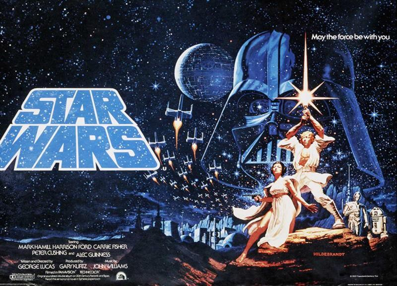

8 min read

I find it fascinating to compare the original Star Trek television series with the first Star Wars movie. And I think this comparison can reveal a lot about the current state of our culture.
The Star Trek TV series ran from 1966 to 1969. Our heroes represented the United Federation of Planets. Their large craft was named the USS Enterprise. They wore uniforms. They were known by the titles of their assigned positions: Captain Kirk, Commander Spock, Lieutenant Sulu, and so on. They included men and women of color, as well as members of alien species who were treated as human peers. They followed a written code, starting with the Prime Directive. And they were driven by a mission: “to explore strange new worlds, to seek out new life and new civilizations, to boldly go where no man has gone before.” Individual episodes often examined various aspects of our humanity as revealed through comparison to an alien culture, or to humans who had been altered through an encounter with some strange feature of the universe. The signature weapon was a phaser, often set to stun rather than to do any permanent damage.
Star Wars was released ten years later, in 1977. The context for our space adventure here is not exploration, but mortal combat. Rebels are fighting against the Galactic Empire. The Empire's large spacecraft is a massive Death Star. Our heroes wear no uniform apparel. They are all white-skinned. One of them is a loner named Han Solo. The craft he pilots is named after a bird. Other rebel craft are small, maneuverable fighters. Our heroes have no organizational titles, but some of them belong to an ancient, mystical order, and one is a Princess. Alien species are present, but they are treated as inarticulate pets or as freaks rather than as peers. The villain appears only in all-black high-tech armor that covers every inch of his skin, and his lines are delivered by a black man. Instead of a mission based on exploration and discovery, this adventure offers the metaphysical tag line “May the Force be with you.” And instead of following a written code, our heroes seek to use the “light side of the Force,” and avoid the “dark side.” And the signature weapon is a light saber, which generally kills or maims when used.
What a difference a decade made! Despite some superficial similarities, it's hard to imagine two more clearly differentiated space adventures.
Star Trek clearly emphasized the higher developmental levels of 4 - 6, characterized by obedience to a set of shared principles, a rational/scientific worldview, and a commitment to pluralistic diversity. Star Wars, on the other hand, emphasized the lower levels of 1 - 3, characterized by a concern for individual survival, a belief in magic and superheroes and ancestral stories, and a focus on outcomes of power struggles between warring leaders and factions.
In the earlier space show, a large organized federation was exploring the galaxy to increase its store of knowledge, and was committed to peace and non-interference in alien cultures.
In the later narrative the large organization had become the enemy, and was committed only to increasing its power by any means necessary, while the heroes were a ragtag band of hardy individuals.
Today, it seems, we in the US are increasingly living in a Star Wars sort of universe, with the Star Trek worldview visible only as a distant memory in our rearview mirror. Our two-party political struggles appear more and more to all of us to resemble the original Star Wars trilogy, with the only difference between us being that some see our current political situation as part of The Empire Strikes Back, while others see it as a chapter in the Return of the Jedi.
Another Star Wars sort of perspective we all seem to share these days is a distrust of large institutions. For those on the left, of course, the ones we most mistrust are giant corporations, whereas for those on the right it is the “deep state.” Where we agree is on the sanctity of the individual.
This mistrust of institutions is somewhat unfortunate because, as far as I can see, none of us really wants our human future to be a society of hunter-gatherers, which means that we are likely to become more dependent on our large human institutions, rather than less so. For those on the left, the bad news is “Yes, we are still going to need large corporations.” And for those on the right the bad news is “Sorry, but we are still going to need big government.” So we might all need to take a refresher course on how to get along as part of the USS Enterprise.
What is it that makes so many of us distrustful of large institutions? And what can we do to build and maintain support for these organizations on which our modern society depends for its continued existence?
Here are some principles that we should expect every large organization to follow.
Just as each episode of Star Trek started with “To boldly go…”, every organization needs to pursue its own clear and concise mission with similar dedication and persistence.
A mission should not just be a few nice thoughts strung together in a pleasant fashion and hung on a wall; when done well, a mission becomes a lodestone that can be used to bring about alignment of energies within an organization, as well as alignment of relationships with customers and community members.
Any large organization is too complex an affair to be easily understood in its entirety, but those within and outside of an institution can use a mission as a shorthand for apprehending the essential points of an organization; and if an organization can remain true to its mission, then it becomes much easier for us to sufficiently understand and trust the institution as a whole.
Survival is an important tactic, but a mission must supply strategic guidance.
Within the organization, decisions need to be made at the lowest reasonable level, and appropriate sorts of autonomy need to be available to every corner of the organization.
This also means that communities need to have the power to regulate the operations of organizations operating within their boundaries.
This also means that, whenever possible, customers and workers need to be free to move to competitors when they deem this to be in their best interests.
Organizations and organizational leaders who are observed to tell the truth earn trust from those they lead and those with whom they do business; one revealed lie depletes an institution's store of trust, and makes it that much harder to replenish.
Every institution needs to be focused on creating products and/or services that will be valued by customers and communities. A mission should spell out what sort of value will be created, and in what way.
We all know how quickly things change in our modern societies, yet we are all also concerned about the future welfare of ourselves, those we love, our children and their children. An institution that is only concerned with short-term results, and that demonstrates a blatant disregard for our common futures, will not retain anyone's trust for long.
Here's an interesting example. How on earth did United Airlines and airport employees decide that it was right to forcibly drag a screaming, innocent traveler off of one of their airplanes? And how could the United Airlines CEO respond by commending employees for following “established procedures for dealing with situations like this”? Perhaps employees were following prescribed rules. But did this somehow fit into their corporate mission? Did it show any respect for the reasonable autonomy of their passengers? Did they think that allowing a customer to board, and then dragging him off against his will, was an example of honesty? Did they stop to think that their actions would be transparently viewed by others? Were they actually creating value for their customers with such actions? And were they considering the long-term consequences of their behavior? No matter what the airline's rules were, consideration of any one of these principles – let alone all of them – should have given these employees pause before carrying out such actions.
Unfortunately, despite mass outrage over this incident, the financial performance of United Airlines did not suffer at all in the aftermath. No doubt this is partly because passengers flying certain routes have little choice of carriers these days. But it was also, certainly, because our expectations of large companies have sunk so low that even this sort of behavior could not long surprise us.
Such low expectations for our large institutions are not healthy for our society as a whole. They force us into nonsensical positions, such as citizens telling their elected officials to “keep their government hands off my Medicare,” and they allow our fears and expectations to be easily manipulated by others for their own financial gain. And it is hard to imagine how problems as big as global sustainability can be effectively addressed without help from large institutions.
What will it take to restore trust in these agencies, and return us to something resembling the Star Trek era?
It seems to me that we all need to raise our expectations of organizations we work with, and those we work for, to demand adherence to these seven principles.
Nothing less will really do.